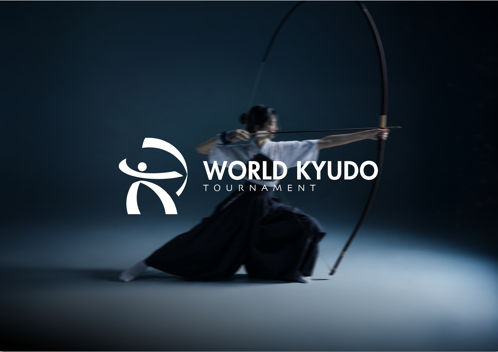
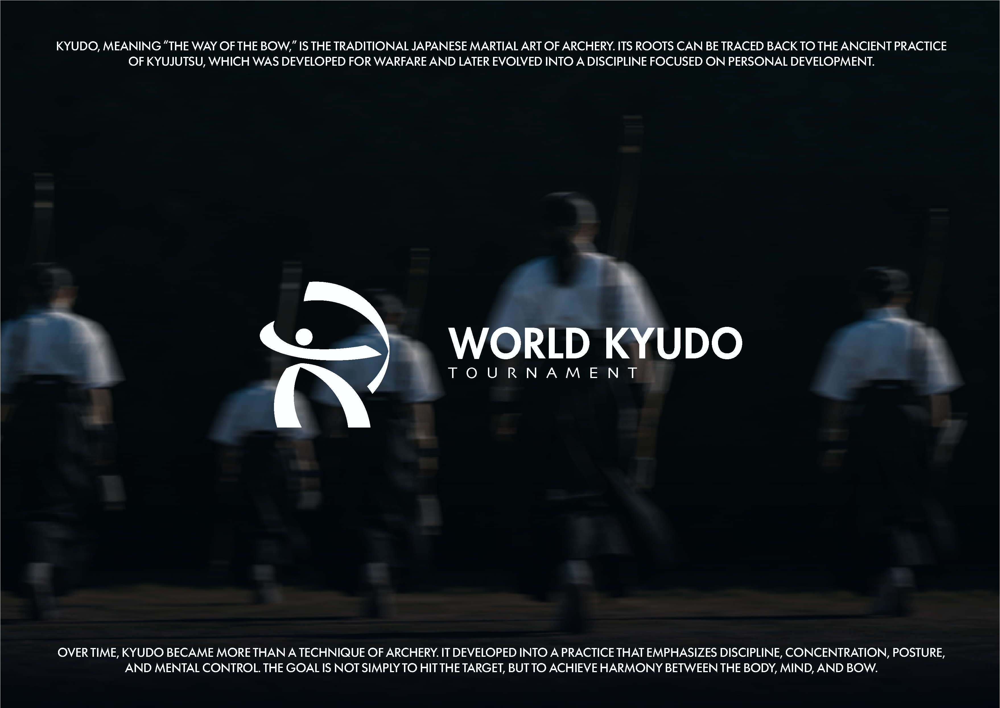
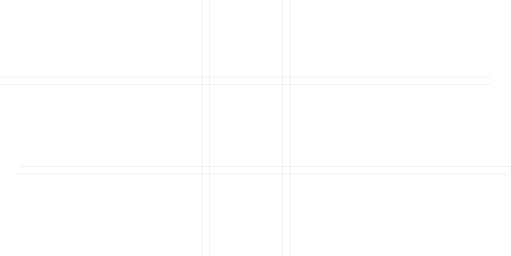
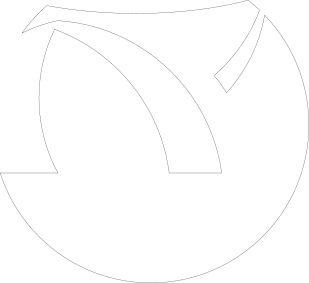
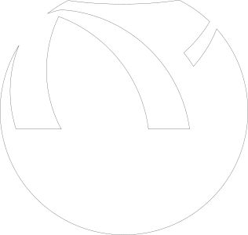
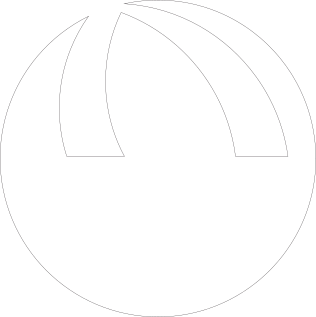
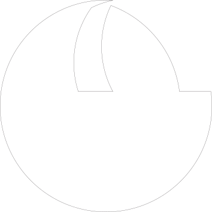
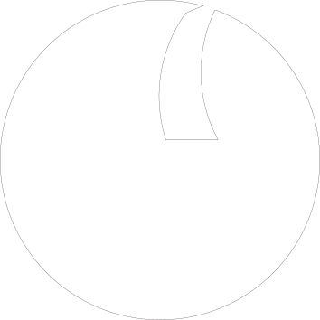
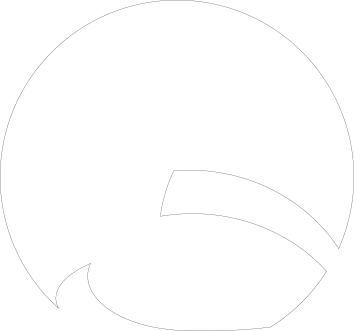
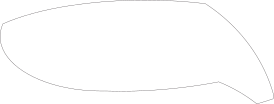
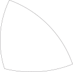
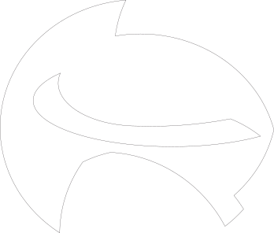
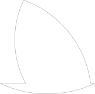
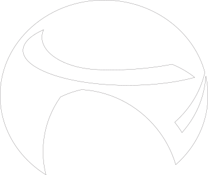
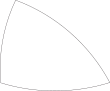
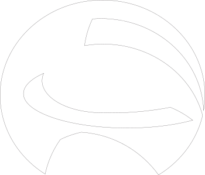
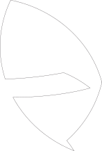
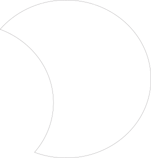
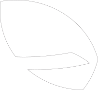
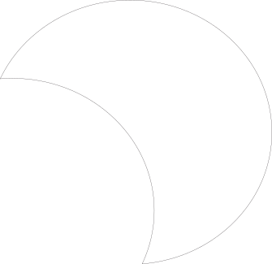
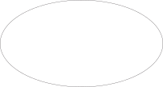
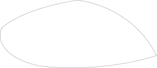
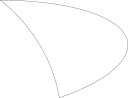
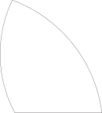
THE LOGO WAS CREATED USING CIRCLES,
CURVES, AND SIMPLE GEOMETRIC SHAPES.
CONSTRUCTION LINES WERE USED TO
CONTROL THE PROPORTIONS AND MAINTAIN
VISUAL BALANCE. THE FINAL FORM WAS
SIMPLIFIED TO MAKE THE SYMBOL CLEAR,
RECOGNIZABLE, AND EASY TO USE IN
DIFFERENT APPLICATIONS.
THE FINAL LOGO COMBINES
KYUDO, MOVEMENT,
PRECISION, AND HARMONY
INTO ONE SIMPLE VISUAL
IDENTITY. THE GOAL WAS TO
CREATE A SYMBOL THAT FEELS
DYNAMIC, MEMORABLE,
PROFESSIONAL, AND SUITABLE
FOR AN INTERNATIONAL
KYUDO TOURNAMENT.
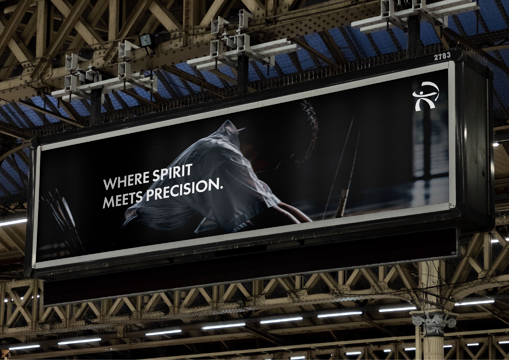
DEEP NAVYTRADITION & DISCIPLINE
THE DEEP NAVY TONE REPRESENTS THE QUIETNESS, DISCIPLINE, AND CONCENTRATION FOUND IN KYUDO. INSPIRED BY
THE CALM ATMOSPHERE OF THE KYUDOJO AND THE TRADITIONAL JAPANESE AESTHETIC, THIS DARK COLOR CREATES A
STRONG AND SOPHISTICATED FOUNDATION FOR THE VISUAL IDENTITY.
IT ALSO PROVIDES A SENSE OF DEPTH, STABILITY, AND FOCUS, REFLECTING THE MENTAL DISCIPLINE REQUIRED BEFORE
EVERY SHOT.
#00050D
BLUE FOCUS & MODERNITY
THE BLUE TONE INTRODUCES A SUBTLE FEELING OF CALMNESS, FOCUS, AND MODERNITY. IT CONNECTS THE TRADITIONAL
CHARACTER OF KYUDO WITH A CONTEMPORARY INTERNATIONAL SPORTS IDENTITY.
BLUE IS USED AS A SUPPORTING TONE TO CREATE VISUAL DEPTH AND ATMOSPHERE, ESPECIALLY IN PHOTOGRAPHY AND
PROMOTIONAL MATERIALS.
#142533
WHITE PURITY & PRECISION
WHITE REPRESENTS PURITY, SIMPLICITY, AND PRECISION. IT IS INSPIRED BY THE TRADITIONAL WHITE KYUDO KEIKOGI AND
CREATES A CLEAR CONTRAST AGAINST THE DARK NAVY BACKGROUND.
THE USE OF WHITE ALSO COMMUNICATES THE CALM AND CONTROLLED NATURE OF KYUDO, WHILE KEEPING THE
TOURNAMENT IDENTITY CLEAN AND HIGHLY LEGIBLE.
#FDFEFF
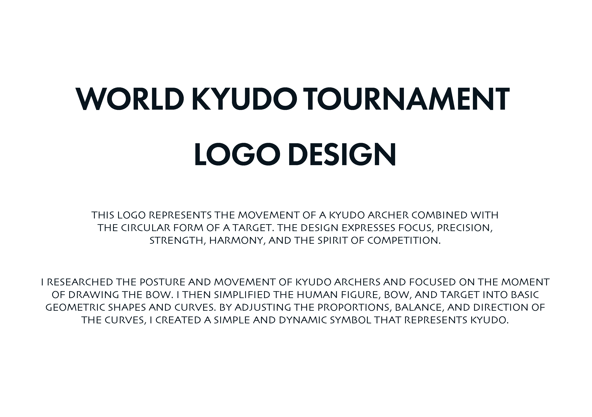
COLOR CONCEPT
The overall color palette combines Deep Navy, White, and Blue to express the
balance between tradition and modernity.
DEEP NAVY - Discipline & Tradition, WHITE - Purity & Precision, BLUE - Focus & Modernity
Together, these colors create a visual identity that feels
calm, powerful, disciplined,and internationally sophisticated,
reflecting the spirit of the World Kyudo Tournament.
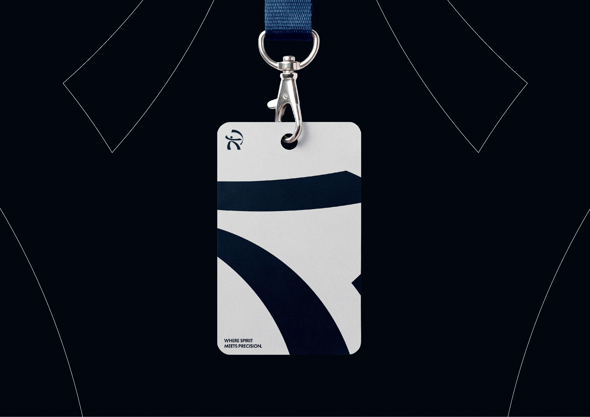
Back to Top